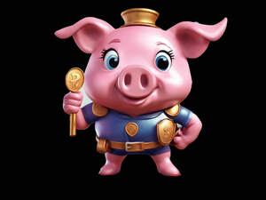

Trade Mark Journal No.2025/034 22 August 2025
UK00004247918 12 August 2025 (16,28,35,41)

- Class 16
- Stationery; Envelopes [stationery]; Paper stationery; Stickers [stationery]; Printed stationery; Office stationery; Stencils [stationery]; Wrappers [stationery]; Binders [stationery]; Stationery boxes; Stationery folders; Folders [stationery]; Office paper stationery; Writing stationery; Scented stationery; Adhesives for stationery; Paper folders [stationery]; Thumbtacks [stationery]; Pads [stationery]; Transparencies [stationery]; Party stationery; Pencil ornaments [stationery]; Pencil ornaments (stationery); Files [stationery]; Protractors [for stationery and office use]; School supplies [stationery]; Envelopes for stationery use; Copying paper [stationery]; Seals [stationery]; Covers [stationery]; Stationery and educational supplies; Marking pens [stationery]; Paper sheets [stationery]; Pocket books [stationery]; Pins [stationery]; Announcement cards [stationery]; Clips for paper [stationery]; Manifolds [stationery]; Cases for stationery; Stationery cases; Index cards [stationery]; Glitter pens for stationery purposes; Stationery (Cabinets for -) [office requisites]; Cabinets for stationery [office requisites]; Document holders [stationery]; Glitter for stationery purposes; Adhesives for stationery purposes; Glue pens for stationery purposes; Writing cases [stationery]; Desktop cabinets for stationery [office requisites]; Adhesive pads [stationery]; Tapes (adhesive -) [stationery]; Self-adhesive tapes for stationery and household purposes; Self-adhesive tapes for stationery or household purposes; Adhesives for stationery or household purposes; Adhesive foils stationery; Felt mats for Chinese calligraphy (stationery); Plantable seed paper [stationery]; Marking inks for stationery purposes; Document files [stationery]; Pastes for stationery or household purposes; Organizers for stationery use; Label printing machines for household and stationery use; Self-adhesive tapes for stationery use; Adhesives for stationery or household use; Glue for stationery or household purposes; Document holders being articles of stationery; Adhesives for stationery and household use; Gummed tape [stationery]; Paste for stationery or household purposes; Adhesive tapes for stationery or household purposes; Gummed cloth for stationery purposes; Adhesive tapes for stationery purposes; Pastes and other adhesives for stationery or household purposes; Rubber bands [stationery]; Seaweed glue for stationery; Plastic adhesives for stationery or household purposes; Notepads; Rubber cements for stationery; Gelatine glue for stationery or household purposes; Glue for stationery or household use; Gums [adhesives] for stationery or household purposes; Gluten [glue] for stationery or household purposes; Isinglass for stationery or household purposes; Adhesive bands for stationery purposes; Gum arabic glue for stationery or household purposes; Spirit gum for stationery purposes; Paper embossers [office requisites]; Latex glue for stationery or household purposes; Glitter glue for stationery purposes; Letterhead paper; Notepaper; Letterheads; Adhesive tape for stationery purposes; Adhesives [glues] for stationery or household purposes; File pockets for stationery use; Adhesive tape cutters being stationery; Starch paste for stationery; Adhesive tape dispensers for household or stationery use; Paper envelopes for packaging; Wood pulp board [stationery]; Automatic paper clip dispensing machines for office or stationery use; Printed paper invitations; Reinforced stationery tabs; Stapling guns (Electric -) for stationery use; Dye-sublimation print paper; Laser print paper; Print blocks; Print characters; Print wheels; Prints; Digital printing paper; Printed publications; Publications (Printed -); Printing paper; Graphic prints; Printed paper labels; Lithographic prints; Giclee prints; Photographic printing paper; Paper for printing photographs; Photo prints; Canvas prints; Printed books; Printed art reproductions; Printed coupons; Printed flyers; Offset printing paper for pamphlets; Printing fonts; Cartoon prints; Printed periodicals; Printed paper signs; Annuals [printed publications]; Silk screen prints; Printed brochures; Photographic prints; Printed booklets; Supercalendered printing paper; Printed calendars; Printed advertisements; Color prints; Printed advertising boards of paper; Pictorial prints; Printed patterns; Photographs [printed]; Printed photographs; Printed newsletters; Laser printing paper; Ink sheets for use in reproducing images in the printing industry; Art prints; Printing papers; Printed invitations; Graphic art prints; Forms, printed; Printed forms; Printed periodical publications; Printed music; Paper stock [printing paper]; Printed packaging materials of paper; Printed cartoon strips; Fine art prints; Printed tickets; Printed programmes; Printed pamphlets; Reel paper for printers; Printed horoscopes; Engravings [prints]; Printed menus; Prints [engravings]; Printed sheet music; Printed reports; Publication paper; Periodical publications; Periodical magazines; Advertising publications; Promotional publications; Magazine paper; Photo albums; Mini photo albums; Photograph albums; Picture postcards; Pictures; Photograph album pages; Brag books [photo albums]; Picture cards; Photograph mounts; Photographs; Photo storage boxes; Watercolor pictures; Photo mounting corners; Coloring pictures; Photograph corners; Postcards and picture postcards; Photo albums and collectors' albums; Colouring pictures; Paper picture mounts; Picture books; Art pictures; Cardboard picture mounts; Prints in the nature of pictures; Picture framing mat boards; Mounts of paper for pictures; Signed photographs; Photographic albums; Paintings [pictures], framed or unframed; School photographs; Postcard paper; Wallpaper sample book; Decoration and art materials and media; Paper; Newsprint paper; Stencil paper [mimeograph paper]; Paper and cardboard; Kraft paper; Parchment paper; Vellum paper; Tissue paper for making stencil paper; Napkin paper; Paraffined paper [waxed paper]; Notebook paper; Greaseproof paper; Photocopy paper; Toilet paper; Paper napkins; Napkins of paper; Glassine paper; Tissue paper for use as material of stencil paper (ganpishi); Stencil paper; Paper doilies; Paper towels; Towels of paper; Mimeograph paper; Crepe paper; Cloth paper; Carbonless paper; Envelope paper; Blotting paper; Typewriter paper; Tissue paper; Corrugated paper; Paper for photocopies; Serviettes of paper; Paper serviettes; Wrapping paper; Laminated paper; Writing paper; Binder paper; Paper made from paper mulberry (tengujosi); Paper ribbon; Recycled paper; Letter paper; Xerographic paper; Paper made from paper mulberry (kohzo-gami); Paper staplers; Staplers for paper; Paper handtowels; Tablecloths of paper; Paper tablecloths; Paper bags; Bags of paper; Calligraphy paper; Giftwrapping paper; Paper ribbons; Ribbons (Paper -); Ribbons of paper; Manila paper; Tracing paper; Wax paper; Graph paper; Rice paper; Waxed paper; Paper (Waxed -); Gummed paper; Paper for photocopying; Calendered paper; Drawing paper; Paper boxes; Boxes of paper; Paper handkerchiefs; Handkerchiefs of paper; Gift-wrapping paper; Paper hand-towels; Coated paper; Paper tapes; Absorbent paper; Tablemats of paper; Paper garlands; Craft paper; Note paper; Paper bunting; Bunting [paper]; Bunting of paper; Paper lace; Oiled paper for paper umbrellas (kasa-gami); Ivory paper; Paper board; Adhesive paper; Paper washcloths; Proofing paper; Art paper; Paper cuttings; Book-cover paper; Paper tissues; Tissues of paper; Mulch paper; Bulk paper; Paper book markers; Pads of paper; Paper pads; Carbon paper; Paper patterns; Labels of paper; Paper labels; Masking paper; Paper for wrapping books; Baking paper; Paper clips; Placards of paper; Honeycomb paper; Semi-processed paper; Lavatory paper; Rosettes of paper; Paper hangtags; Grocery paper; Packing paper; Paper wipes; Plastic bags for packing; Freezer bags; Paper bags and sacks; Paper for bags and sacks; Rubbish bags; Plastic shopping bags; Gift bags; Carrier bags; Sandwich bags; Garbage bags of plastic; Dustbin bags; Plastic bags for wrapping; Plastic bags for packaging; Plastic sandwich bags; Paper shopping bags; Paper bags for packaging; Packaging bags of paper; Shopping bags of paper or plastic; Paper lunch bags; Padded bags of paper.
- Class 28
- Toys; Toys, games, and playthings; Toys and playthings for pets; Ride-on toys; Cuddly toys; Puzzles [toys]; Toys for sandpits; Plush toys; Stuffed toys; Inflatable toys; Toys for babies; Noisemakers [toys]; Toys for pets; Wind-up toys; Fidget toys; Toys for use in perambulators; Radio-controlled toys; Plastic toys; Scooters [toys]; Crib toys; Toys for animals; Mobiles [toys]; Toys, games and playthings for pet animals; Pet toys; Windup toys; Rattles [toys]; Toys for cats; Toys for infants; Wooden toys; Model cars [toys or playthings]; Toys and playthings for pet animals; Toys for dogs; Toy dolls; Educational toys; Outdoor toys; Models being toys; Toy playsets; Bendable toys; Bath toys; Dog toys; Infant toys; Sandbox toys; Action figures [toys or playthings]; Bathtub toys; Electronic toys; Whistles [toys]; Inflatable ride-on toys; Sand toys; Controllers for toys; Soft toys; Drones [toys]; Miniature car models [toys or playthings]; Bouncing toys; Cloth toys; Toy figurines; Tricycles for infants [toys]; Musical toys; Play mats for use with toy vehicles [playthings]; Toy furniture; Toys for birds; Mechanical toys; Wheeled toys; Clockwork toys; Developmental toys; Crib mobiles [toys]; Plastic toys for use in the bath; Fluffy toys; Stuffed animals [toys]; Inflatable bath toys; Stacking toys; Rocking toys; Fabric toys; Water toys; Plastic models being toys; Modular toys; Model toys; Whack-a-mole toys for pets; Play mats incorporating infant toys [playthings]; Toy prams; Drawing toys; Action toys; Stuffed and plush toys; Stuffed plush toys; Plush stuffed toys; Battery-operated action toys; Sketching toys; Children's toys; Squeezable squeaking toys; Toy bicycles; Plastic character toys; Toy tableware; Smart toys; Construction toys; Clockwork toys [of plastics]; Whistling toys; Articles of clothing for toys; Push toys; Toy wheelbarrows; Squeeze toys; Talking toys; Toy bakeware and toy cookware; Bendy balls being toys; Toy mobiles; Toy xylophones; Chewing toys for parrots; Stuffed bean-filled toys; Toy animals; Clothing for toy figures; Pull toys; Toy cars; Toys for pet animals; Toy strollers; Assembly toys; Water-squirting toys; Toy balloons; Toy scooters; Intelligent toys; Toy hats; Music box toys; Toy cookware; Toy harmonicas; Punching toys; Toy automobiles; Smart plush toys; Toy robots; Toy tools; Toy weapons; Xylophones being musical toys; Toys in the form of puzzles; Soft sculpture toys; Novelty toys for parties; Toy glockenspiels; Inflatable pool toys; Costumes being childrens playthings; Toy bakeware; Puzzle mats [toys]; Toy balls; Money guns being toys; Toy pushchairs; Toy airplanes; Toy vehicles; Playthings; Paper airplanes; Paper dolls.
- Class 35
- Retail services in relation to stationery supplies; Wholesale services in relation to stationery supplies; Retail services connected with stationery; Inventorying merchandise; Display services for merchandise; Merchandising; Product merchandising; Online retail store services relating to clothing; Retail services connected with the sale of clothing and clothing accessories; Mail order retail services for clothing accessories; Retail of third-party pre-paid cards for the purchase of clothing; Promoting the sale of fashion goods through promotional articles in magazines; Merchandizing; Retail services relating to sporting goods; Online retail store services in relation to clothing; Promoting the sale of goods and services of others through the distribution of printed material and promotional contests; Promoting the sale of goods and services of others through promotional events; Retail store services in the field of clothing; Business merchandising display services; Retail services in relation to clothing accessories; Wholesale services relating to sporting goods; Product merchandising for others; Advertising services relating to the sale of goods; Promoting the goods and services of others through the distribution of discount cards; Online retail services relating to clothing; Mail order retail services for clothing; Mail order retail services connected with clothing accessories; Retail services relating to clothing; Advertising services to promote the sale of beverages; Online retail services relating to handbags; Mail order retail services related to foodstuffs; Online retail store services relating to cosmetic and beauty products; Procuring of contracts for the purchase and sale of goods; Mail order retail services related to non-alcoholic beverages; Online retail services relating to toys; Retail services relating to fake furs; Online retail services relating to jewelry; Retail services via catalogues related to foodstuffs; Promoting the goods and services of others through the administration of sales and promotional incentive schemes involving trading stamps; Retail services relating to jewelry; Arranging of contracts for the purchase and sale of goods and services, for others; Preparing promotional and merchandising material for others; Online retail services relating to luggage; Retail services relating to furs; Retail services in relation to downloadable virtual clothing; Retail of third-party pre-paid cards for the purchase of entertainment services; Retail services relating to automobile accessories; Retail services in relation to downloadable virtual handbags; Unmanned retail store services relating to drink; Retail services relating to bakery products; Wholesale services relating to clothing; Unmanned retail store services relating to food; Retail services in relation to clothing; Online retail services for downloadable virtual clothing; Promoting the goods and services of others by arranging for sponsors to affiliate their goods and services with sporting activities; Retail services relating to delicatessen products; Mail order retail services related to beer; Online retail services in relation to downloadable virtual clothing; Mail order retail services related to alcoholic beverages (except beer); Promotion of goods and services through sponsorship of sports events; Sales promotions at point of purchase or sale, for others; Promoting the goods and services of others through discount card programs; Promotion of goods and services for others; Promotion of goods and services through sponsorship; Retail services in relation to fashion accessories; Online retail services in relation to downloadable virtual handbags; Procurement of contracts for the purchase and sale of goods and services; Retail services via catalogues related to alcoholic beverages (except beer); Retail services connected with the sale of furniture; Retail services via catalogues related to beer; Procurement of contracts for the purchase and sale of goods and services for others; Advertising particularly services for the promotion of goods; Promoting the goods and services of others by arranging for sponsors to affiliate their goods and services with sports competitions; Purchasing of goods and services for other businesses; Retail services in relation to downloadable virtual headwear; Trade promotional services; Marketing the goods and services of others by distributing coupons; Mail order retail services for cosmetics; Retail services relating to candy; Sales promotion services; Retail services via catalogues related to non-alcoholic drinks; Online retail services relating to cosmetics; Online retail services in relation to downloadable virtual headwear; Retail services in relation to downloadable virtual footwear; Organization of fashion parades for sales promotion purposes; Negotiation of contracts relating to the purchase and sale of goods; Retail services in relation to toys; Retail services relating to furniture; Wholesale services relating to fake furs; Retail services relating to horticultural products; Promotion of goods and services through sponsorship of international sports events; Retail services in relation to bakery products; Retail services in relation to baked goods; Online retail services in relation to downloadable virtual footwear; Retail services in relation to pet products; Promoting the goods and services of others by arranging for sponsors to affiliate their goods and services with awards programs; Wholesale services relating to jewelry; Wholesale services in relation to clothing; Wholesale services relating to automobile accessories; Retail services in relation to sporting equipment; Retail services in relation to bags; Advertising for motion picture films; Media relations services; Advertising via electronic media and specifically the internet; Presentation of companies on the Internet and other media; Providing marketing consulting in the field of social media; Organisation of promotions using audiovisual media; Organisation of promotions using audio-visual media; Providing business information in the field of social media; Sales promotion using audiovisual media; Promotional marketing services using audiovisual media; Advertising and marketing services provided by means of social media; Media buying services; Rental of advertising time on communication media; Provision of advertising space on electronic media; Market research services relating to broadcast media; Arranging subscriptions to information media; Advertising in the popular and professional press; Presentation of financial products on communication media, for retail purposes; Presentation of goods on communications media, for retail purposes; Provision of advertising space, time and media; Presentation of goods on communication media, for retail purposes; Communication media (Presentation of goods on -), for retail purposes; Retail purposes (Presentation of goods on communication media, for -); Dissemination of advertising via online communications networks; Press advertising services; Press advertising consultancy; Arranging subscriptions to media packages; Provision and rental of advertising space, time and media; Reproduction of files [paper]; Wholesale services in relation to bags; Business consultancy services relating to management of fund raising campaigns; Business consultancy services relating to the marketing of fund raising campaigns; Financial marketing; Business advice relating to growth financing.
- Class 41
- Publication of printed matter and printed publications; Rental of printed publications; Publication of printed directories; Newspaper publication; Publication of journals; Publication of periodicals; Publication of magazines; Magazines (Publication of -); Publication of newspapers; Publication of catalogues; Publication of books; Books (Publication of -); Publication of catalogs; Publication of prospectuses; Publication of photographs; Publication of textbooks; Publication of booklets; Publication of brochures; Publication of texts; Electronic publication; Publication of calendars; Publication of posters; Publication of leaflets; Publication of manuals; Publication of electronic magazines; Publication of music; Publication services; Publication of scientific information journals; Publication of year books; Preparation of texts for publication; Services for the publication of magazines; Publication of text books; Publication of consumer magazines; Publication of printed matter; Publication of instructional literature; Magazine publishing; Publication of educational books; Publication and editing of printed matter; Publication of books, reviews; Publication of educational texts; Services for the publication of books; Online publication of electronic newspapers; Publishing services for periodical and non-periodical publications, other than publicity texts; Publication of electronic books and journals on-line; On-line publication of electronic books and journals; Publication of books, magazines, almanacs and journals; Publication of periodicals and books in electronic form; Publication of audio books; Publishing of electronic publications; Online publication of electronic books and journals; Publication of electronic books and journals online; Services for the publication of newsletters; Publication of educational printed matter; Publication of medical texts; Newspaper publishing; Electronic online publication of periodicals and books; Publication of printed matter, other than publicity texts; Publication of music books; Publication of newspapers, periodicals, catalogs and brochures; Publication of calendars of events; Publishing of medical publications; Publication of musical texts; Publishing of journals; Consultation services relating to the publication of magazines; Publication of educational materials; Publication of directories relating to travel; Publication of multimedia material online; Electronic publication services; Publication of directories relating to tourism; On-line publication of electronic books and journals (non-downloadable); Services for the publication of guide books; Publication of books relating to entertainment; Issue of publications; Book publishing; Services for the publication of maps; Publishing; Publication of printed matter relating to education; On-line publication of electronic books and journals [not downloadable]; Consultation services relating to the publication of books; Publication of texts in the form of CD-ROMs; Publication of printed matter, other than publicity texts, in electronic form; Publication of texts, other than publicity texts; Texts (Publication of -), other than publicity texts; Publication of fact sheets; Publishing of newspapers; Book and review publishing; Publication of books relating to information technology; Publication of printed matter in electronic form; Publication of electronic books and periodicals on the Internet; Publication of training manuals; Publication of sheet music; Multimedia publishing of electronic publications; Publication of texts in the form of electronic media; Multimedia publishing of magazines, journals and newspapers; Consultation services relating to the publication of written texts; Publication of books relating to television programmes; Multimedia publishing of journals; Publication of online reviews in the field of entertainment; Publishing of newsletters; Publishing of scientific papers; Publishing of electronic books and journals on-line; Publishing of web magazines; Publication of lyrics of songs in book form; Publication of educational teaching materials; Publishing of documents; Publishing of books, magazines; Publishing of electronic books and journals online; Electronic publication of texts and printed matter, other than publicity texts, on the Internet; Publication of books relating to rugby league; Multimedia publishing of magazines; Online electronic publishing of books and periodicals; Publishing, reporting, and writing of texts; Publication of printed matter in electronic form on the Internet; Multimedia publishing of newspapers; Publishing of books; Providing on-line electronic publication [not downloadable]; Publication of educational and training guides; Publication of printed matter relating to pet fish; Photo editing; Portrait photography; Leasing of motion picture cameras; Motion picture (Rental of -); Motion picture rental; Aerial photography; Motion picture studio services; Portrait photography services; Photography; Rental of video tapes and motion pictures; Motion picture studios; Portrait painting; Film editing (Photographic -); Editing of printed matter containing pictures, other than for advertising purposes; Motion picture production; Rental of motion pictures; Motion pictures (Rental of -); Motion picture song production; Video editing; Photograph library searching services; Leasing of motion pictures; Production of motion pictures; Showing of cinematographic and motion picture films; Motion picture film production; Motion picture theaters; Rental of motion picture films; Leasing of motion picture projectors; Rental of motion picture and television scenery; Rental of cinematographic and motion picture films; Production of animated motion pictures; Services in the production of animated motion picture entertainment; Rental of motion pictures and of sound recordings; Entertainment services in the form of motion pictures; Movie showing; Services in the production of animated motion pictures and television features; Provision of audio and visual media via communications networks; Provision of entertainment services through the media of television; Provision of entertainment services through the media of publications; Provision of entertainment services through the media of audio tapes; Library services and rental of media; Provision of entertainment services through the media of video-films; Provision of online information relating to audio and visual media; Publication of material on magnetic or optical data media; Provision of entertainment services through the media of cine-films; Digital video, audio and multimedia entertainment publishing services; Rental of toys; Education; Vocational education; Health education; Pre-school education; Education and training; Academies [education]; Education and instruction; Education services; Services of schools [education]; University education services; Education, teaching and training; Academy services (Education -); Education academy services; Academy education services; Vocational education and training services; Religious education; Training and education services; Education and training services; Music education; Education examination; Kindergarten services [education or entertainment]; Provision of education courses; Career counseling [education]; Educational services for providing courses of education; Teaching of diet education; Provision of training and education; Provision of education and training; Higher education services; Providing of education; Physical education; Entertainment, education and instruction services; Education academy services for teaching languages; Education academy services for teaching art history; Education services relating to vocational training; Education information; Information (Education -); Medical education services; Computer education training; Primary education services; Adult education services; Residential education courses; Computer education training services; Linguistic education and training services; Education and training consultancy; Boarding school education; Physical education instruction; Further education; Primary education services relating to literacy; Vocational education relating to home safety; Vocational education relating to self-defence; Education academy services for teaching acting; Musical education services; Physical education services; Sports education services; Physical health education; Legal education services; Technological education services; Providing continuing medical education courses; Online education services; Lingual education; Management of education services; Management education services; Provision of physical education; Education services related to the arts; Singing education; Education services relating to health; Education services relating to nutrition; Dietary education services; Education academy services for teaching construction drafting; Providing continuing dental education courses; Career counselling relating to education and training; Education services relating to religion; Vocational education in the field of mechanics; Education courses relating to automation; Educational services provided by institutes of higher education; Club education services; Education and training services in the field of occupational health and safety; Vocational education relating to personal safety; Education and training in the field of music and entertainment; Research in the field of education; Adult education services relating to medicine; Providing continuing nursing education courses; Adult education services relating to finance; Education information services; Education and training in the field of occupational health and safety; Guidance (Vocational -) [education or training advice]; Vocational guidance [education or training advice]; Education services for imparting language teaching methods; Secondary school educational services; Sporting education services; Education services relating to medicine; Educational and teaching services; Education, entertainment and sport services; Education services relating to business training; Education courses relating to the travel industry; Training or education services in the field of life coaching; Career counselling [training and education advice]; Providing continuing legal education courses; Education services relating to the veterinary profession; Vocational education relating to first aid; Adult education services relating to law; Education in the field of computing; Blindness prevention education services; Vocational education for young people; Provision of education courses relating to electronics; Adult education services relating to commerce; Education services relating to yoga; Education services relating to conservation; Education, entertainment and sports; Education services in the nature of courses at the university level; Education services relating to music; Education in the field of occupational health and safety; Career advisory services (education or training advice); Adult education services relating to banking; Education services relating to commerce; English language education services; Provision of education courses relating to telecommunications; Education services relating to industry; Education in the field of computing science; Adult education services relating to pharmacy; Education services relating to hygiene; Provision of facilities for education; Residential education courses relating to archery; Education services relating to the cinema; Educational services provided by institutes of further education; Provision of education courses relating to computers; Education in movement awareness; Organization of education competitions; Adult education services relating to management; Education services relating to sports; Education services relating to photography; Organization of competitions [education or entertainment]; Competitions (Organization of -) [education or entertainment]; Organization of competitions for education or entertainment; Education services relating to banking; Education services relating to fashion; Education services relating to pharmacy; Adult education services relating to auditing; Educational and training services relating to healthcare; Education services relating to conservation of the environment; Education services relating to food technology; Providing education courses relating to the travel industry; Education and training in the field of automotive engineering; Education and training in the field of business management; Adult education services relating to accounting; Educational courses relating to finance; Courses (Training -) relating to finance; Education and training services in relation to business management; Training services relating to finance; Consultancy services relating to engineering education; Education services relating to the agricultural industry; Provision of instruction courses in finance; Education advisory services relating to accountancy; Education services relating to management; Education services relating to the use of computers in business; Education services relating to business franchise management; Education and training services in relation to real estate management; Consultation services relating to business education; Education and instruction services; Professional consultancy relating to education; Coaching relating to finance; Education (Religious -); Educational services in the healthcare sector; Education services relating to the horticultural industry; Education services for managerial staff; Advisory services relating to education; Lending of books relating to finance.
Roda Ducommun